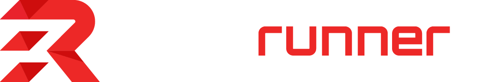

On-device · Air-gapped
One Model
Every input — spoken, written, or wire-format — is just tokens.
NNormalizes all inputs
UUnderstands context
CCorrelates & infers
LRuns inference locally
PProtects sensitive data
DOperates disconnected
02Ask simple questions — get actionable answers
Give me a SITREP.
SITREP →Fused narrative across last-hour Link-16, CoT, USMTF, and analyst chat.
How does the last hour change my COAs?
COA Update →Diff against prior assumptions; flags stressed branches and sequels.
What threats are emerging?
Threat Assessment →Emerging activity ranked by severity and confidence.
Which assets are best positioned to respond?
Asset Recommendation →Available platforms ordered by reach, readiness, and risk.
What does this mean for my mission?
Mission Impact →Plain-language implications and recommended next actions.